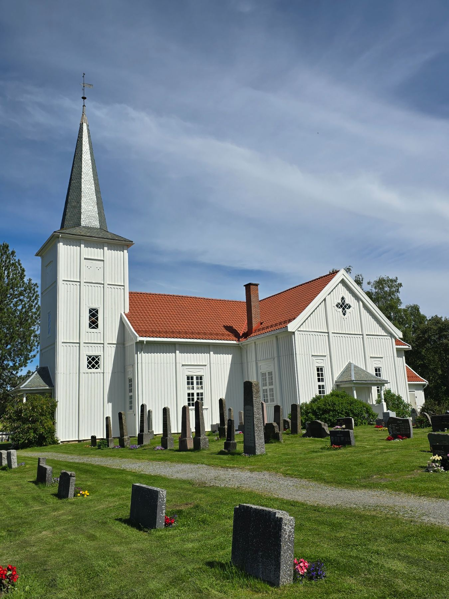
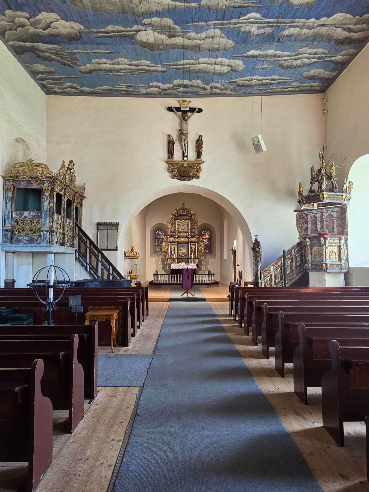
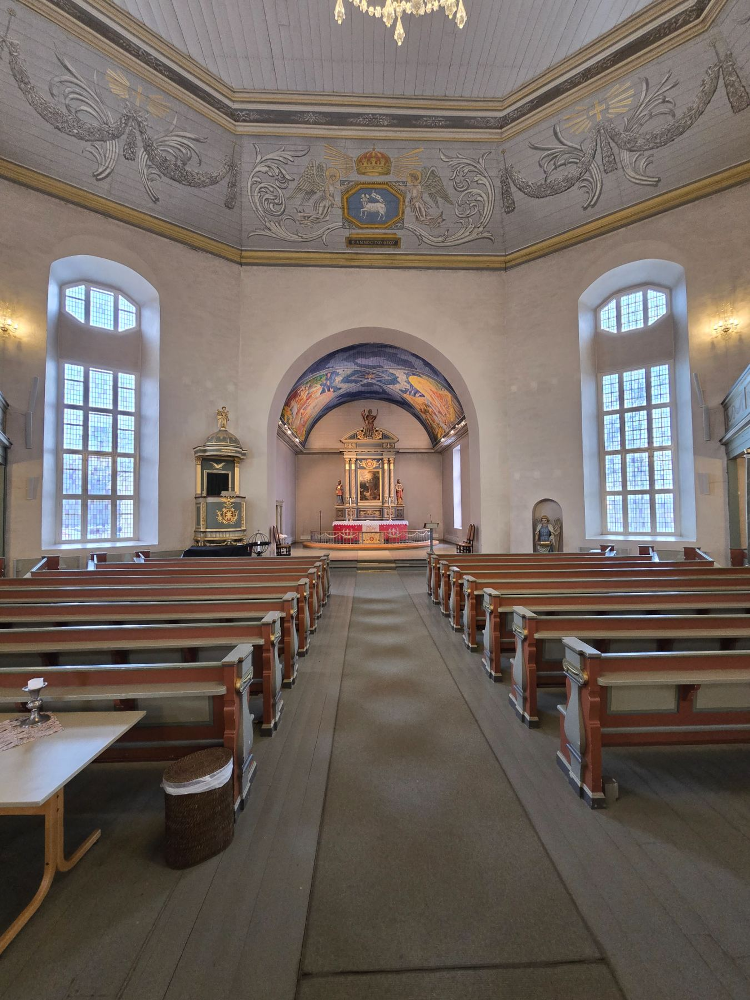

Lydteknikk for kirkerom
Jeg planlegger og leverer lydanlegg tilpasset kirkens rom, historie, bruk og brukere.
Fra første akustikkmåling til et komplett, ferdig lydanlegg med et enkelt og intuitivt brukergrensesnitt.



Samme rom. Mange ulike hendelser i løpet av en uke.
Et lydanlegg som er tilpasset rommet, bruken og brukerne
Hver kirke har sin egen akustikk, sin egen historie og sine egne brukere. Mine tekniske løsninger tar hensyn til alt dette.
Målet er et enkelt brukergrensesnitt som er likt i alle kirkene i samme fellesråd.
«Kirkelydpakken» gir intuitiv betjening
Støtter flerbruk av kirkerommet.
DSP-en tidsforsinker lyden til høyttalerne der rommet krever det, slik at lyden når alle benkene samtidig og oppleves å komme fra talestolen.
Alle hensyn medtatt
Rådgivning, prosjektering, levering og overlevering av en konsulent som «kan» kirkerommet.
Jeg er ikke bundet til produsenter, utstyret velges etter rommet og brukerne. Gjenbruk av eksisterende utstyr er selvfølgelig noe vi tilstreber.
Skal du bruke en av kirkene?
Hver kirke har sin egen side med bruksveiledning for begravelsesbyrå, kor, konsertarrangør og kirkens ansatte. Dette er kirker med Kirkelydpakken.
Alle installasjoner →Se hvordan Kirkelydpakken fungerer
Over 30 år med lyd i norske kirker
Jeg har arbeidet med akustikk, lydanlegg og liveproduksjon i kirkerom i mer enn 30 år. I dag jobber jeg bare med kirker, både som uavhengig rådgiver og som leverandør av komplette anlegg.
Jeg har også skrevet fagboken Lyd i kirken for kirkeansatte og beslutningstakere.
Last ned fagboken (PDF) →